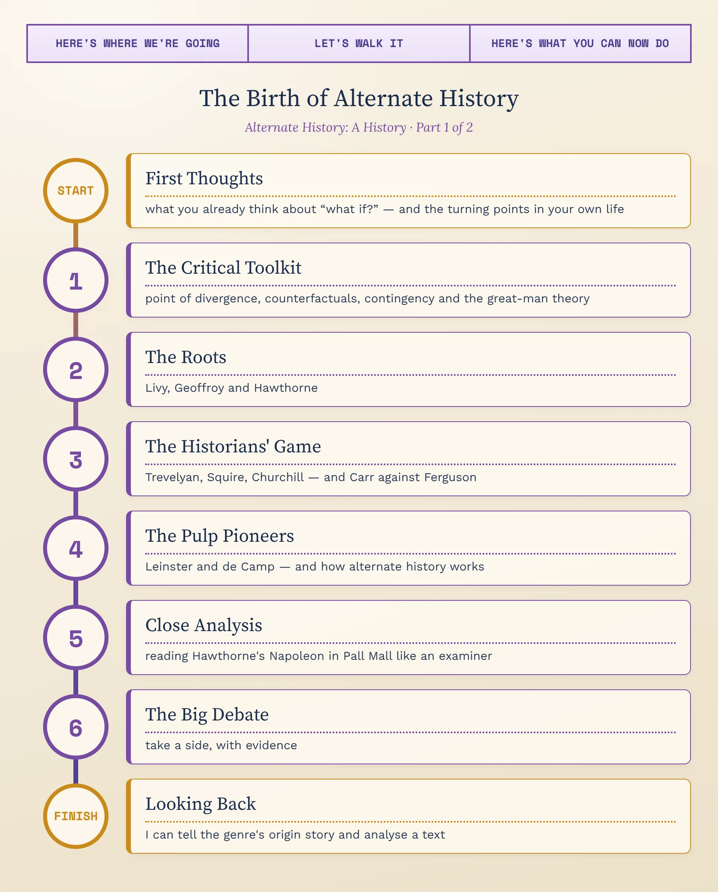
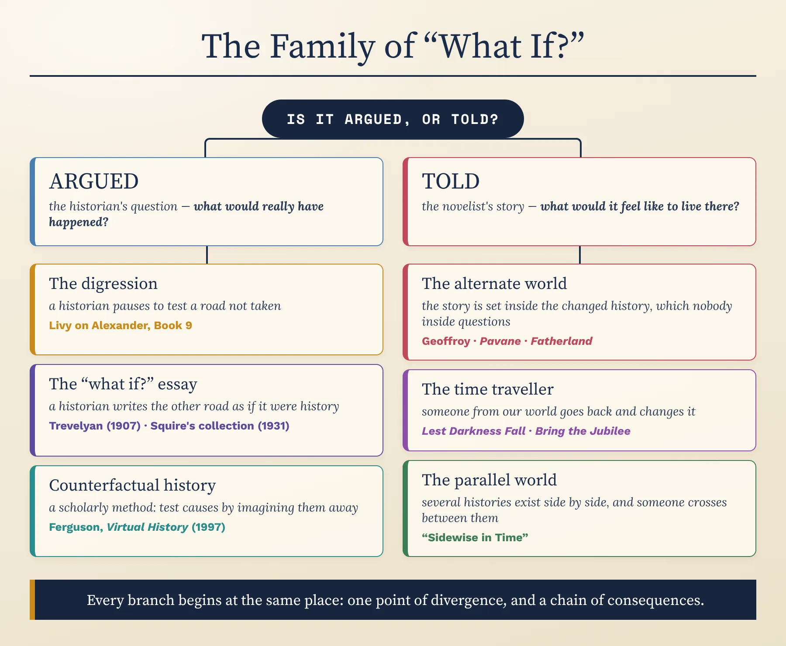
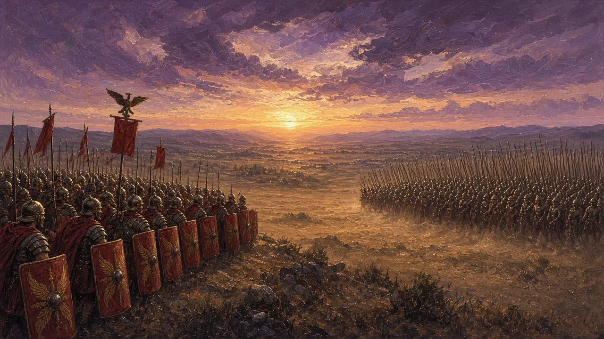
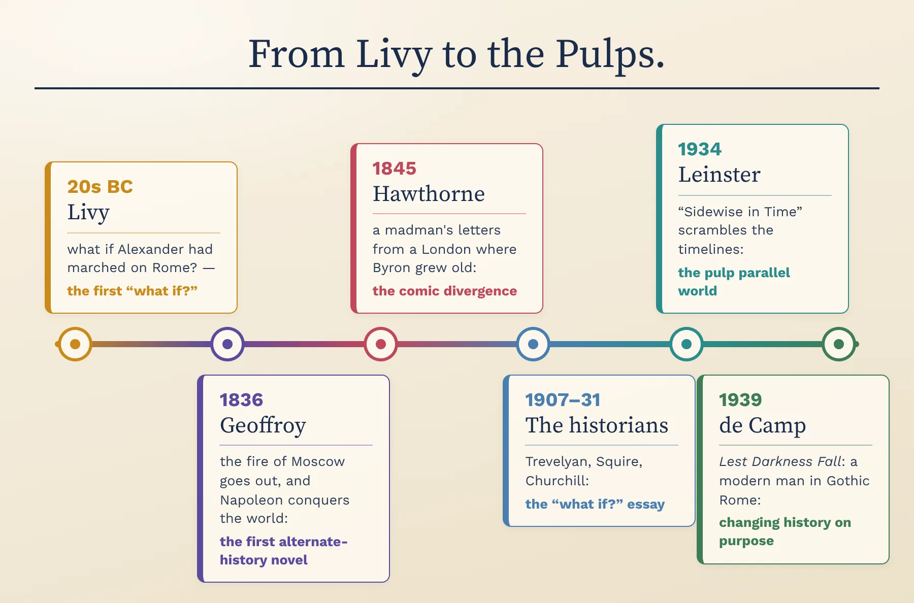
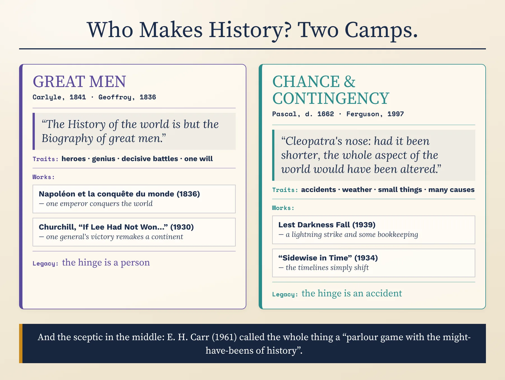
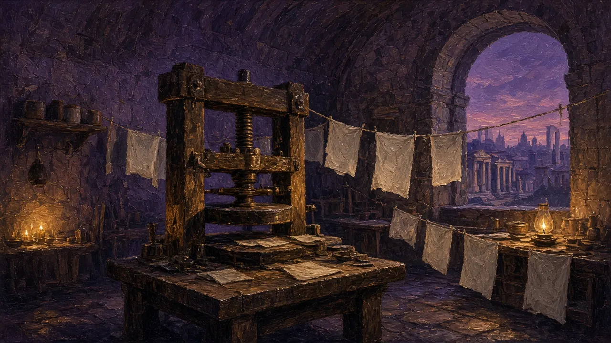
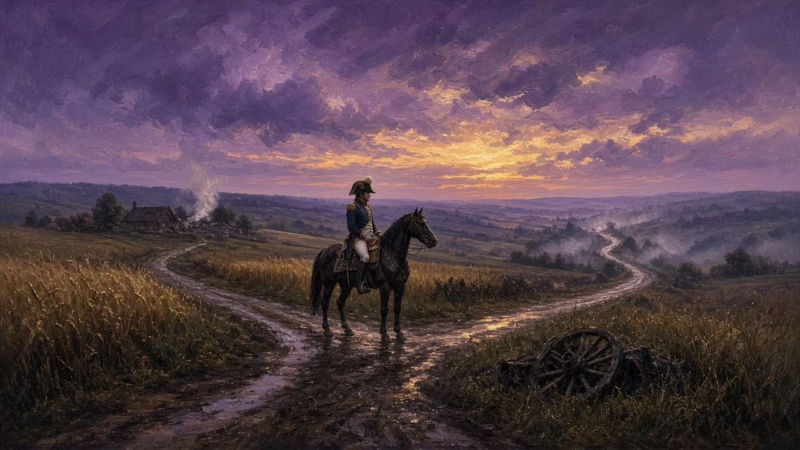
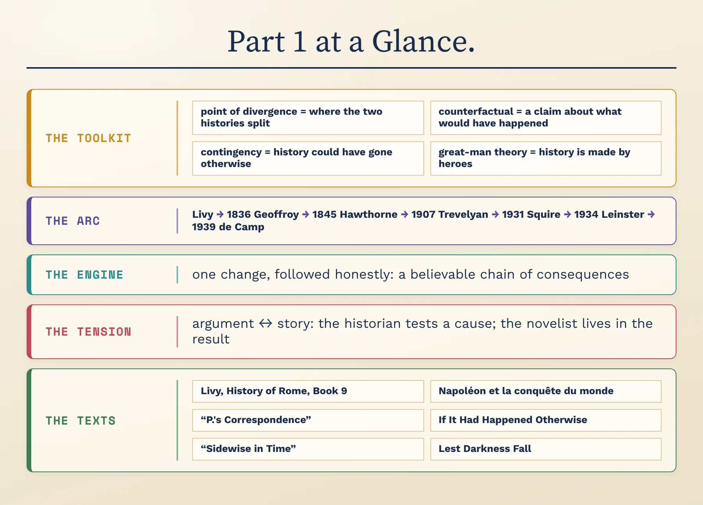

From Livy to the Pulps & How ‘What If?’ Works · C1/C2 · Speaking, Analysis & Discussion

Every one of us plays this game. What if I had taken that job, missed that train, never met that person? Alternate history plays the same game with the whole world: what if a battle had gone the other way, a king had died young, an invention had come a century early? It sits on the border between history and fiction, and it annoys people on both sides — historians call it a parlour game, and some literary critics call it a gimmick. Yet it has been played by a Roman historian, a French judge, an American novelist, a future British prime minister and some of the best science-fiction writers of the twentieth century. Over these two lessons we'll trace how a single sentence of speculation grew into a genre — and examine how it works on a reader.
Before we begin — think aloud, no notes. There are no wrong answers yet:
Think of one small moment in your own life that changed everything that came after. What would your life look like now if it had gone the other way?
Now think big: which single event in the history of your country or the world do you think most deserved to go differently? What would have changed — and what, surprisingly, might have stayed the same?
Gut instinct, before we study anything: is history made by great individuals, or by forces and accidents too big for any one person? By the end of today you'll answer this again with evidence.
To discuss alternate history at an advanced level you need metalanguage — precise terms for what a text is doing. First, the biggest map of all: the family of “what if?”, and the one question that splits it in two.
Every “what if?” can be handled in two ways. A historian argues it: if this had happened, what would most probably have followed, and what does that tell us about the real causes of events? A novelist tells it: what would it feel like to wake up, go to work and fall in love in the world where it happened? The first is a kind of reasoning; the second is a kind of story. The genre grew up on the border between them, and many of its best books borrow from both.
Apply the test. A newspaper article titled “What if the Titanic had missed the iceberg?” — argued or told? A film about a woman whose life splits in two when she just catches, or just misses, a train — is that alternate history at all, if nothing changes in world history? Defend a placement for each.

The map splits the genre into “what if?” that is argued and “what if?” that is told, with their branches underneath. Put three stories, films or games you know onto it — anything with a changed past. Then take one hard case — a story in which a time traveller changes history — and argue whether it belongs with alternate history or with science fiction.
Four terms run through everything that follows. Two describe how the stories are built; two come from an old argument among historians about why things happen at all.
Fans and critics also call it the turning point, the hinge, or the Jonbar point — a name taken from Jack Williamson's 1938 serial The Legion of Time, in which the whole future depends on whether a boy called John Barr picks up a magnet or a pebble.
A good point of divergence is small and clear: one decision, one accident, one death. Everything before it is real history; everything after it is invention. Many writers hide it, and let the reader work out where the worlds split — which is half the pleasure.
A counterfactual is a claim that runs counter to the facts: “If the Spanish Armada had landed in 1588, England would have become Catholic again.” We use them all the time without noticing — every time we say something caused something else, we are quietly claiming that without the first thing, the second would not have happened.
That is why historians argue about them. Some say they are a necessary tool for thinking about causes; others say they are unprovable guesses dressed up as scholarship. A novelist doesn't need to prove a counterfactual — only to make it believable.
If history is contingent, then small things can have enormous consequences. The French philosopher Blaise Pascal (1623–1662) put it in one of the most famous lines on the subject, in his Pensées, published after his death: “Cleopatra's nose: had it been shorter, the whole aspect of the world would have been altered.” (In the W. F. Trotter translation.)
His point: had Cleopatra been less beautiful, Julius Caesar and Mark Antony might not have fallen for her, and the history of Rome would have run differently. Alternate history is, in a sense, a whole genre built on Cleopatra's nose.
The Scottish writer Thomas Carlyle gave it its classic form in a series of lectures in 1840, published in 1841 as On Heroes, Hero-Worship, and the Heroic in History: “The History of the world is but the Biography of great men.”
Many critics have rejected the idea since: they point out that “great men” leaves out women, ordinary people, economics, climate and disease. But much early alternate history is quietly Carlylean — it changes the fate of one emperor or one general and assumes the world changes with him. Watch for this assumption in every text in this lesson.
Take any story you know with a changed past — a film, a book, a game, a TV episode. Tell me: what is its point of divergence? Is its counterfactual believable? Does it treat history as contingent, or does it change one great man and let the world follow? (If nothing comes to mind, invent one now: what if the internet had been invented in 1900?)
Nobody set out to invent alternate history. For two thousand years, people simply stopped, from time to time, to wonder how things might have gone. The genre took its shape from three very different kinds of writer: a historian making a patriotic argument, a novelist rewriting a defeat as a triumph, and a storyteller who used madness as a door into another world.
The oldest: the earliest “what if?” usually quoted in histories of the genre comes from the Roman historian Livy (Titus Livius, c. 59 BC–AD 17), who spent about forty years writing a history of Rome from its foundation in 142 books. Only 35 of them survive.
The question: in Book 9, while telling the story of Rome's wars in the 320s BC, Livy stops to ask what would have happened if Alexander the Great — who conquered Persia and died in Babylon in 323 BC — had turned west and attacked Rome instead.
Why it matters: nearly everything is already here — a clear point of divergence, a comparison of forces, a chain of consequences, and, underneath the argument, a message about the present. Livy was writing under the emperor Augustus, and his answer flatters Rome.

The digression: Book 9, chapters 17–19. Livy apologises for leaving his story — and then spends three chapters comparing Alexander's army, generals and luck with Rome's.
In his own words (in Canon Roberts's 1912 translation): the mention of so great a king, he writes, makes him share reflections he has often had “when I have proposed to myself the question, ‘What would have been the results for Rome if she had been engaged in war with Alexander?’” His answer comes at once: “as the Roman empire proved invincible against other kings and nations, so it would have proved invincible against Alexander.”
His argument: Alexander's reputation was helped by dying young, before his luck could turn; Rome had many generals as brave as he was, and a tradition of war that had “grown into a science”; one defeat would have ended Alexander's campaign, while Rome could lose battles and still win wars.
Why it matters: it is not fiction — there are no characters, no scenes — but it is the first known attempt to reason carefully about a history that never happened. And it shows from the start that a counterfactual often says more about the writer's present than about the past.
Who he was: Louis-Napoléon Geoffroy-Château (1803–1858), a French judge and the godson of the emperor, who admired Napoleon so much that he added “Napoléon” to his own name.
What happens: in 1812 Napoleon's army enters Moscow — but this time the great fire goes out of its own accord. Instead of the disastrous retreat through the Russian winter, Napoleon marches north, defeats Russia, conquers Britain and then the rest of the world, which he unites as a single “universal monarchy”. The book is written as a sober history of an emperor who never fell.
Its preface asks whether people have the right to take refuge in their imagination “pour suppléer à l'histoire” — “to make up for history”. It was published anonymously in 1836 and reissued under his name in 1841 as Napoléon apocryphe. It was not translated into English until 1994.
Why it matters: it is usually called the first alternate-history novel: one clear point of divergence, followed through twenty years of invented history. It is also pure wish-fulfilment — a defeated country's dream of victory — and a perfect example of the great-man theory.
Who he was: the American author of The Scarlet Letter (1850), from Salem, Massachusetts. The story first appeared in a magazine in April 1845 and was collected the next year in Mosses from an Old Manse.
What happens: the narrator introduces letters from his “unfortunate friend P.”, a man with a disordered mind who writes from London — in fact, from a small barred room in New England. In P.'s London, the great poets who died young are alive and old: Byron is enormously fat, religious and a Conservative; Burns is a venerable old man; Keats has spent decades on an unpublished epic; and Napoleon, now over seventy, has been brought from St Helena to England. Meanwhile, P. reports, a promising young writer called Dickens died soon after starting the Pickwick Papers.
A small joke: the letter is dated “LONDON, February 29, 1845” — a day that never existed, because 1845 was not a leap year.
Why it matters: it is one of the first stories set in an alternate present, and an early master of the comedy — and the melancholy — of famous people in the wrong lives. Hawthorne also keeps the door open: is this another world, or a sick man's fantasy? We read it closely in the Close Analysis tab.
In 1876 the French philosopher Charles Renouvier published Uchronie, an imaginary history of Europe in which Christianity never became the religion of the Western world. His title joined the Greek ou (“not”) and chronos (“time”) — a “no-time”, on the model of utopia, a “no-place”.
In French, Italian and Spanish, uchronie, ucronia and ucronía are still the usual names for the genre. English mostly says “alternate history” (American) or “alternative history” (British usage varies).
Livy invents no characters and no scenes; Geoffroy invents twenty years of events; Hawthorne invents a madman. Where does history end and fiction begin? Argue it aloud, then compare your view with a critic's.

The line runs from Livy to de Camp. Cover it, and put these five in order from memory: “Sidewise in Time”, “P.'s Correspondence”, Lest Darkness Fall, Geoffroy's Napoleon, Livy's digression. Then pick any two that sit next to each other and say what the later one does that the earlier one did not.
In the early twentieth century, “what if?” became a fashionable game for British historians and writers — first as a newspaper competition, then as a book of essays by some of the most famous names of the day. And then, after the Second World War, the most influential sceptic of all tried to shut the game down.
In July 1907 a London newspaper, the Westminster Gazette, offered a prize of fifty pounds for the best essay on the subject “If Napoleon had won the Battle of Waterloo”. The very idea of the competition shows that readers already knew the game, and expected to enjoy it.
The early twentieth century was also the great age of the “decisive battle”: history books for schools and general readers told the past as a series of turning points, each one won or lost by a commander. If history really turned on a handful of battles, then it was natural to ask what would have happened if one had turned the other way.

The chart splits writers into two camps: history turns on great men, or on chance. Is that a fair split — or too simple? Make the case for it, then name one force that fits neither camp: an economy, a disease, an idea, a climate.
Who he was: one of the best-known British historians of the twentieth century, later Regius Professor of Modern History at Cambridge, and a Liberal who believed that Britain's history was a story of growing freedom.
“If Napoleon had won the Battle of Waterloo” (1907): his essay won the Westminster Gazette prize. In it, a victorious Napoleon makes peace; but in Britain the defeat drives politics sharply to the right, reform is crushed for a generation — and the poet Lord Byron, a radical, is executed. He reprinted the essay in his collection Clio, a Muse (1913).
Why he matters: a serious historian, writing an invented history in the style of real history — and using it to say something about his own country. His nightmare Britain is a way of praising the real one. (Trevelyan's work is still in copyright in the UK, so we describe it rather than quote it.)
The book: in 1931 the poet and editor J. C. Squire (1884–1958) collected eleven “what if?” essays by famous writers and historians, among them G. K. Chesterton, Hilaire Belloc, the French writer André Maurois and Winston Churchill. It is often called the first anthology of alternate history.
Churchill's essay: “If Lee Had Not Won the Battle of Gettysburg” first appeared in Scribner's Magazine in December 1930. Its trick is a double reversal: it is written by a historian who lives in a world where the South won the American Civil War at Gettysburg in 1863 — and who imagines, as a fantasy, what would have happened if Lee had lost. In other words, it describes something close to our own history as if it were the alternate one.
Why it matters: it made “what if?” respectable, even glamorous. And Churchill's twist — our world seen from the outside, as a strange possibility — would reappear thirty years later in Philip K. Dick's The Man in the High Castle (Part 2).
Who he was: a British diplomat, journalist and historian of Soviet Russia. In 1961 he gave the George Macaulay Trevelyan Lectures at Cambridge — named, by an irony of history, after the author of the Waterloo essay. They were published as What Is History?, which became one of the most widely read books on the subject.
His view: historians must explain what did happen, not what might have. Imagining other outcomes, he argued, was not history at all — in his famous phrase, “one can always play a parlour game with the might-have-beens of history.” He suspected that people who loved such games were often the losers of history, wishing it had gone their way.
Why he matters: for decades, his attack made counterfactual history look unserious to professional historians.
Who he is: a Scottish historian of money, empire and war, who has taught at Oxford, Harvard and Stanford.
Virtual History: Alternatives and Counterfactuals (1997): he edited a collection of essays by historians imagining, for example, a Britain that stayed out of the First World War, or a Kennedy who survived Dallas. In his introduction he argued against Carr that we cannot understand what happened without asking what could have happened — history is contingent, not inevitable.
His rule: serious counterfactuals should only consider alternatives that people at the time actually considered, and wrote down. Not “what if Napoleon had had aeroplanes?”, but “what if the government had chosen the other option on the table?”
Carr says “what if?” is a parlour game; Ferguson says history is impossible without it. Which of them would you rather argue for in front of a room of historians — and what is the weakest point in the side you chose? Defend both answers.
What was the trick in Churchill's Gettysburg essay? And give one difference between Carr's view and Ferguson's.
In the 1930s, while historians argued, the cheap American science-fiction magazines — the “pulps”, named after their rough paper — took “what if?” and turned it into adventure. Two stories, five years apart, gave the genre its two great machines: the parallel world and the time traveller who changes history.
Who he was: the pen name of Will F. Jenkins (1896–1975), a hugely productive Virginian writer of pulp fiction, often called “the Dean of Science Fiction”.
What happens (in Astounding Stories, June 1934): on 5 June 1935, patches of the Earth's surface begin to swap places with the same patches in other histories. A Roman legion from a world where Rome never fell appears outside St Louis; Viking longships raid the coast of Massachusetts; a salesman drives into a region where the South won the Civil War; Tsarist Russia's flag flies over San Francisco. A mathematics professor who saw it coming leads his students out to explore — secretly hoping to make himself ruler of some more primitive world.
Why he matters: it brought the idea of many histories existing side by side to a mass audience. The Sidewise Awards for Alternate History, founded in 1995, are named after it; and Isaac Asimov later said it made him aware of the “ifs” of history for the rest of his life.
Who he was: Lyon Sprague de Camp (1907–2000), an American engineer, historian of technology and writer of science fiction and fantasy.
What happens: in 1938 Martin Padway, an American archaeologist, is visiting the Pantheon in Rome when lightning strikes — and he finds himself in the year 535, in an Italy ruled by the Ostrogoths, on the eve of a long and destructive war. He knows what is coming from his reading of the historian Procopius. He starts by distilling brandy to make a living, teaches clerks Arabic numerals and double-entry bookkeeping, and goes on to build a printing press, start a newspaper and set up a semaphore telegraph — all to stop the “Dark Ages” from falling on Europe.
Its history: a shorter version appeared in the magazine Unknown in December 1939; the full novel followed in 1941. It owes a debt to Mark Twain's A Connecticut Yankee in King Arthur's Court (1889), but where Twain ends in disaster, de Camp lets his engineer succeed.
Why it matters: it is the classic story of changing history on purpose, by knowledge and ingenuity rather than by battle — contingency in action. (De Camp's work is still in copyright, so we describe it rather than quote it.)

A changed date doesn't make a story believable; a set of techniques does. The writers in this lesson worked out four of them, and you've already met them all in action — now we name them so you can use them on any text. Hold one alternate history in your head as you go (a story, a film, or the one you invented in the toolkit tab), and test it against each.
The best turning points are moments that really could have gone either way: a close battle, an assassination attempt, an election, a ship that nearly sank. The closer the real event was, the more believable the change.
Seen in action: Geoffroy picks the fire of Moscow; Churchill picks Gettysburg, a three-day battle that was genuinely in doubt; de Camp picks a single man arriving in a year when, historically, everything was about to fall apart.
Say it: what is your story's hinge — and could it really have gone the other way?
After the hinge, the writer must work out what follows, step by step: politics, technology, religion, language, ordinary life. The more honest the chain of cause and effect, the more the reader believes it. Weak alternate histories change one thing and leave everything else as it was; strong ones let the change spread.
Seen in action: Padway's bookkeeping leads to banking, his press to a newspaper, his newspaper to politics; Leinster's Roman legion has been Roman for two thousand more years, not two.
Say it: what is the second and third consequence of your story's change — not only the first?
Readers love to recognise real people living the lives they never had: a famous name in a different job, a different fate, a different character. These cameos make the changed world feel real, and they make a point — how much of a person's life is character, and how much is circumstance?
Seen in action: Hawthorne's Byron, fat and pious and Conservative; his Dickens, dead before he was famous; Trevelyan's Byron, executed for his politics.
Say it: which real person would you put in the wrong life — and what would it show?
An alternate history is always read against the real one. Characters inside the story do not know their world is “wrong”; the reader does. That gap creates dramatic irony, and it turns every alternate history into a comment on our own world: better, worse, or just strange.
Seen in action: Livy flatters the Rome of his own day; Churchill's narrator imagines our history as a fantasy; Hawthorne's reader knows Byron died at thirty-six, and feels the sadness of the old man he might have become.
Say it: does your story make our real world look better, or worse?
Now put your story through all four: its hinge, its ripple, its mirror and its double vision. Two minutes, no notes. Jot a skeleton first if it helps:
Geoffroy gave France the victory it never had; Carr thought “what if?” was the game of history's losers. Is the genre really about wishing the past were different? Argue it aloud, then compare your view with a critic's.
Advanced analysis is about how language creates meaning. Our specimen is one of the earliest scenes in literature set in an alternate present — from Nathaniel Hawthorne's “P.'s Correspondence” (1845), in which P. meets, in the streets of London, a Napoleon who never died on St Helena.

Answer aloud first. Then compare.
Choose a famous person who died young — a musician, a leader, a scientist. In three sentences, describe meeting them, old and ordinary, in the street today, told as casually as Hawthorne tells it. Which single physical detail does the most work? Then argue: is it kinder, or crueller, to imagine the famous growing old?
Everything you need for these is now in your head: Livy's Alexander, Geoffroy's world emperor, Hawthorne's fat Byron and frightened Napoleon, Trevelyan's nightmare Britain, Churchill's double reversal, Carr's parlour game, Ferguson's defence, Leinster's scrambled timelines and de Camp's printing press. Pick two debates. Take a position, support it with the writers and terms you've learned, and concede one point to the other side — the concession is what turns a good argument into an excellent one.
1. Carr called counterfactuals a “parlour game”. Is “what if?” a serious way of understanding the past — or a distraction from what really happened?
2. Is history made by great individuals, or would the world look much the same whoever had been in charge? Use one text from today as evidence for each side.
3. De Camp's hero saves civilisation with bookkeeping and a printing press. Could one person with modern knowledge really change history — or is that the biggest fantasy in the genre?
4. Is it disrespectful to the dead to rewrite real people's lives and deaths for entertainment — Byron, Napoleon, Dickens?
Draft one sentence comparing Livy and Hawthorne that could open a comparative essay. It must make an arguable claim — something a reasonable person could push back on — not just state a difference. Use a frame, then say yours aloud and defend it.
No notes — let's see what stuck. Say each answer aloud in full sentences.
1. What question did Livy ask in Book 9, and how did he answer it?
2. Define, with an example each: point of divergence, counterfactual, contingency, great-man theory.
3. One sentence each: what happens in Geoffroy's novel, “P.'s Correspondence” and Lest Darkness Fall?
4. What was Churchill's trick in the Gettysburg essay — and what did Carr and Ferguson each think of the whole game?
5. Sum up the “argued / told” contrast — and say which kind of “what if?” you find more convincing.
Here is the whole of Part 1 on one sheet — the toolkit, the arc, the engine and the central tension. Use it to check yourself, and where you were wrong, say it again, right this time.

Take the boxes on the recap one at a time and talk your way through each without the small print: name the four critical terms and what each one does, walk the arc from Livy to Lest Darkness Fall, and state the argument–story tension in a single sentence. Whatever you can't yet say smoothly is exactly what to go back and reread.
At the start you gave a gut answer to “is history made by great individuals, or by forces and accidents?” Answer it again now — has your answer changed, and which single text or idea from today did the changing? Which will you actually go and read?